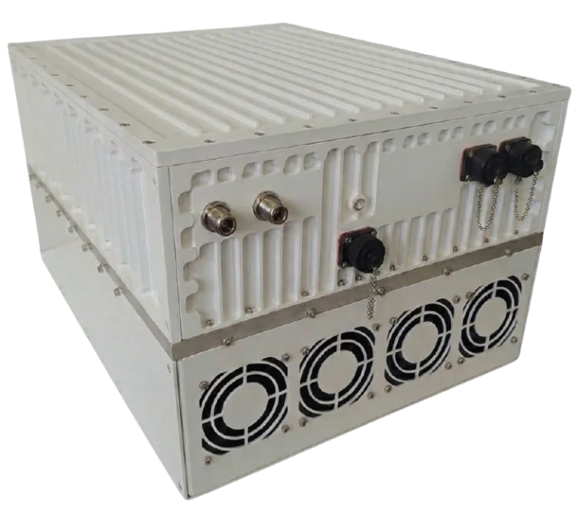

GANSAT TEKNOLOJİTeknik Veri Sayfası
www.gansat.com.tr
sales@gansat.com.tr · +90 (541) 276 39 46
sales@gansat.com.tr · +90 (541) 276 39 46

400W L-to-Ku Band Block Up Converter, GaN teknolojisi tabanlıdır. Zorlu dış ortam koşullarında güvenilir çalışma için tasarlanmış maksimum güç çözümü.
GANSAT-400WKU
| RF Frekans | 13.75 – 14.50 GHz |
| Yerel Osilatör | 12.80 GHz |
| Çıkış Gücü | 400W (+56 dBm) |
| IF Konnektör | N-type or F-type |
| Güç Kaynağı | 220V 50Hz AC, 2000W typ. |
| Çıkış Arayüzü | WR-75 G |
| Kazanç | 72 dB min, 78 dB nominal |
| IMD3 (Two Tones) | -26 dBc max. 2 signals 5 MHz apart at P-LINEAR |
| L.O. Leakage | -45 dBm max |
| Spurious | -50 dBc max |
| Spektral Büyüme | -30 dBc (QPSK at 1.5x and OQPSK at 1.0x symbol rate offset with 2dB back-off) |
| Dış Referans Gereksinimi | Via IF cable — 10 MHz (sine-wave), -5 to +5 dBm @ input port |
| TX Kazanç Varyasyonu / Sıcaklık Kararlılığı | ± 0.5 dB over 40 MHz / ± 1.8 dB over full band / ± 1.5 dB typ., ± 1.8 dB max. |
| Faz Gürültüsü | -55 dBc/Hz @ 10 Hz · -65 @ 100 Hz · -75 @ 1 kHz · -85 @ 10 kHz · -95 @ 100 kHz · -115 @ 1 MHz |
| Gürültü Güç Yoğunluğu TX / RX | -80 dBm/Hz (max) / -125 dBm/Hz (max) |
| Gürültü Faktörü | 15 dB max |
| Input / Output V.S.W.R. | 2:1 max |
| Mute | L.O. Kilit Kaybında SSPA Kapatma |
| Çalışma / Depolama Sıcaklığı | -40°C to +55°C / -55°C to +85°C |
| Boyutlar | 450 (L) × 400 (W) × 220 (H) mm — 17.7" × 15.8" × 8.65" |
| Ağırlık | 42 kg (92.59 lbs) max |
GANSAT-400WEXTKU
| RF Frekans | 13.75 – 14.75 GHz |
| Yerel Osilatör | 12.80 GHz |
| Çıkış Gücü | 400W (+56 dBm) |
| IF Konnektör | N-type or F-type |
| Güç Kaynağı | 220V 50Hz AC, 2000W typ. |
| Çıkış Arayüzü | WR-75 G |
| Kazanç | 72 dB min, 78 dB nominal |
| IMD3 (Two Tones) | -26 dBc max. 2 signals 5 MHz apart at P-LINEAR |
| L.O. Leakage | -45 dBm max |
| Spurious | -50 dBc max |
| Spektral Büyüme | -30 dBc (QPSK at 1.5x and OQPSK at 1.0x symbol rate offset with 2dB back-off) |
| Dış Referans Gereksinimi | Via IF cable — 10 MHz (sine-wave), -5 to +5 dBm @ input port |
| TX Kazanç Varyasyonu / Sıcaklık Kararlılığı | ± 0.5 dB over 40 MHz / ± 1.8 dB over full band / ± 1.5 dB typ., ± 1.8 dB max. |
| Faz Gürültüsü | -55 dBc/Hz @ 10 Hz · -65 @ 100 Hz · -75 @ 1 kHz · -85 @ 10 kHz · -95 @ 100 kHz · -115 @ 1 MHz |
| Gürültü Güç Yoğunluğu TX / RX | -80 dBm/Hz (max) / -125 dBm/Hz (max) |
| Gürültü Faktörü | 15 dB max |
| Input / Output V.S.W.R. | 2:1 max |
| Mute | L.O. Kilit Kaybında SSPA Kapatma |
| Çalışma / Depolama Sıcaklığı | -40°C to +55°C / -55°C to +85°C |
| Boyutlar | 450 (L) × 400 (W) × 220 (H) mm — 17.7" × 15.8" × 8.65" |
| Ağırlık | 42 kg (92.59 lbs) max |
GANSAT-400WKU, Gansat ürün serisinin en yüksek güçlü modeli olarak +56 dBm çıkış gücüyle büyük teleport merkezleri, yüksek güçlü DTH yayın uplink istasyonları ve devlet/savunma omurga haberleşme bağlantıları için tasarlanmıştır. GaN solid-state tasarımı, 7/24 çalışma gerektiren uygulamalarda maksimum güvenilirlik sağlar.
400W RF çıkış için 2000W AC güç tüketen GANSAT-400WKU, aynı güç seviyesindeki TWTA çözümlerine kıyasla anında başlatma, katot ısınma süreci gerektirmeme ve daha uzun MTBF gibi belirgin avantajlar sunar. Intelsat IESS-308/309 uyumluluğu ve geniş sıcaklık aralığı (-40°C ile +55°C), zorlu ortamlarda ve kritik uygulamalarda güvenli kullanımı garanti eder.
400W Ku-Band GaN SSPA; büyük teleport hub'ları, yüksek güçlü DTH yayın uplink'i, devlet/savunma omurga bağlantıları ve yedekli sıcak-bekleme konfigürasyonları gibi maksimum EIRP gerektiren uydu uplink uygulamalarında kullanılır. +56 dBm ile Gansat SSPA ürün serisinde en yüksek bağlantı marjını sunar.
GANSAT-400WKU, 2000W AC güçten 400W RF çıkışı sağlar. Aynı güç seviyesindeki TWTA ile karşılaştırıldığında; anında başlatma, katot ısınma döngüsü gerektirmeme, daha uzun MTBF (vakum tüpü aşınması yok) ve geri çekilmede daha iyi spektral performans sunar — hepsi 7/24 yayın ve teleport operasyonları için kritik özelliklerdir.
Standart KU (GANSAT-400WKU) 13,75–14,50 GHz aralığını kapsarken, Genişletilmiş KU (GANSAT-400WEXTKU) 13,75–14,75 GHz'e kadar çıkar. Yüksek güçlü yayın ve teleport uygulamalarında, belirli bir uydu yayı üzerindeki tüm transponderlere erişmek için genellikle genişletilmiş bant gereklidir.
Evet. GANSAT-400WKU, tam çıkış gücü aralığı boyunca Intelsat IESS-308/309 faz gürültüsü ve spektral saflık gereksinimlerini karşılayarak maksimum EIRP'de bile ticari uydu transponderlerinde parazitsiz çalışmayı garanti eder.